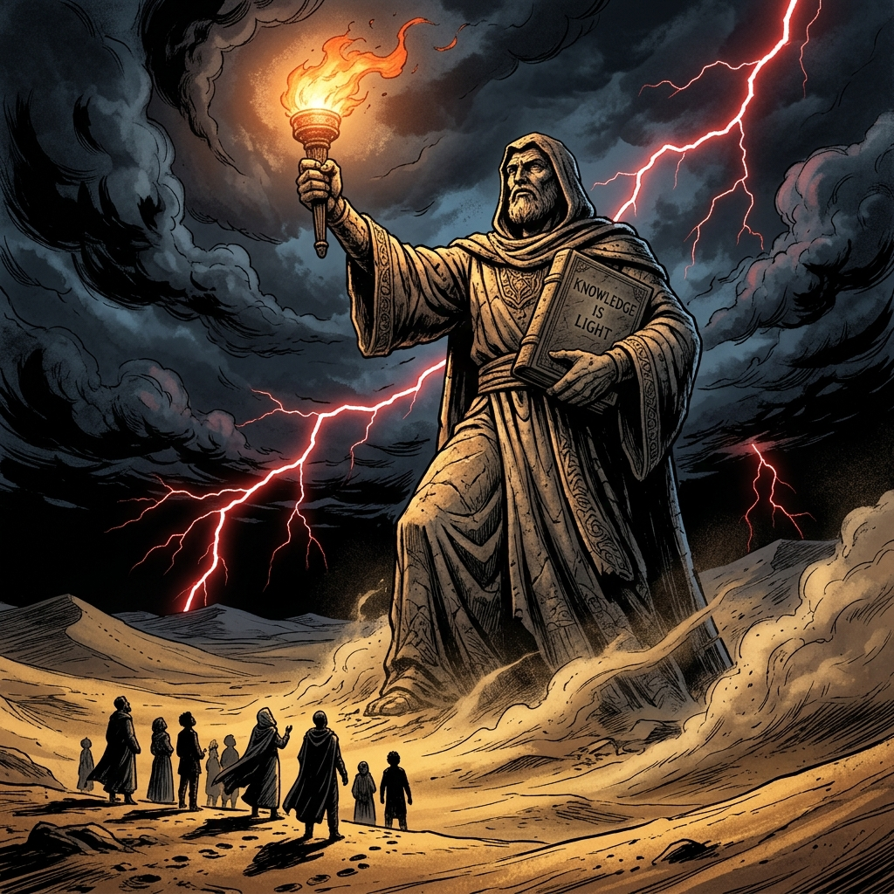
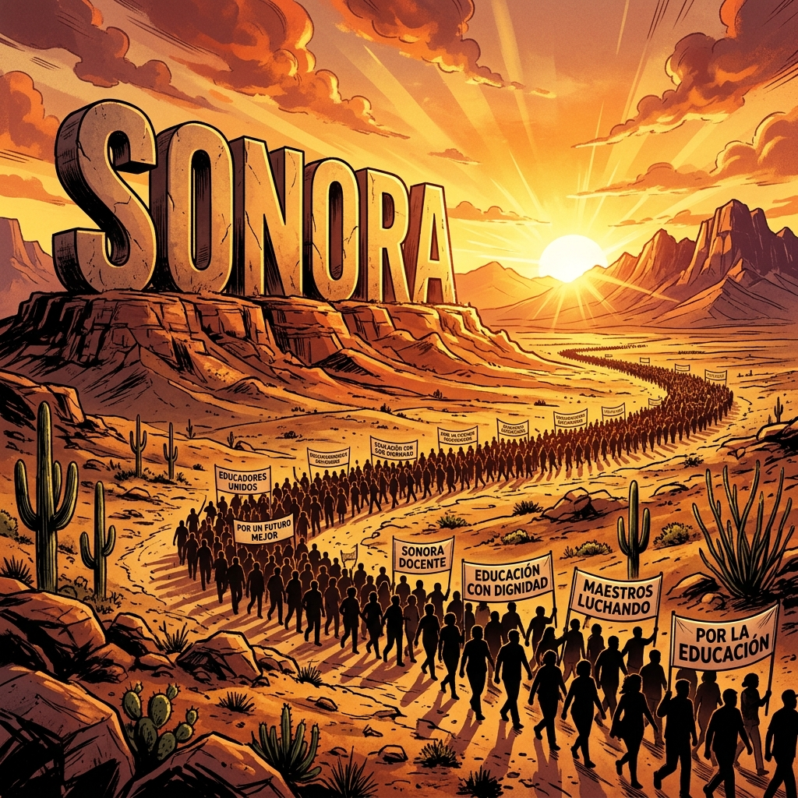

El Jaque Mate Final
"La jugada que redefine la historia magisterial en Sonora. El cierre de una era de sombras y el inicio de la luz técnica."
El Jaque Mate no es solo la última movida en el tablero; es el despliegue total del Arsenal de la Verdad. Aquí, la Teoría de Juegos se encuentra con la voluntad inquebrantable del maestro. Cada panel es una lección de estrategia que asegura nuestra victoria irreversible frente a la opacidad administrativa.

El Tablero en Llamas
"Cuando el viejo sistema se quema bajo el fuego de la auditoría, solo la verdad técnica permanece de pie."
Las estructuras obsoletas están colapsando. La base ha encendido la llama de la información transparente y no hay cortina de humo que pueda apagarla. Estamos presenciando el fin de la simulación burocrática en Sonora, dando paso a una gobernanza magisterial autónoma y tecnificada.

Equilibrio de Suma Cero
"Lo que ellos guardan en la opacidad es la vida de retiro que nos han robado centavo a centavo."
Entendemos el juego: para que ellos luzcan presupuestos 'sanos', aplican la UMA como un torniquete a nuestras pensiones. El equilibrio de Nash se rompe cuando el jugador magisterial decide que la única opción racional es la movilización total por el regreso al esquema de salarios mínimos.

Inclemencia del Territorio
"El desierto no perdona a los débiles, y el magisterio sonorense se ha forjado en la dureza de su propia lucha."
La mística de nuestra tierra nos da la resistencia necesaria. Del Valle del Yaqui al Río Sonora, la red de maestros es un tejido impenetrable de soporte mutuo. Esta inclemencia territorial es nuestro mejor entrenamiento para la resistencia de largo aliento que la victoria demanda.

La Ley de la Escalada
"Cada paso hacia Hermosillo es un grado más en la presión técnica que la autoridad no puede ignorar."
La movilización es un algoritmo de fuerza creciente. No es caos, es orden estratégico. La escalada está fríamente calculada para forzar la apertura de los libros de contabilidad y la firma de acuerdos con carácter de ley. Nuestra fuerza es nuestra mayor razón técnica.

Zona Económica III
"Igualdad ante el costo de vida; justicia ante la labor educativa en el rincón más vibrante de la nación."
El reclamo de la Zona III es el reconocimiento de nuestra geografía económica. El salario del docente debe ser soberano y suficiente para enfrentar la realidad de Sonora. No es un aumento, es la corrección técnica de un desequilibrio histórico que ha asfixiado nuestras mesas.

Acuerdo Generacional
"El brazo fuerte del activo protegiendo la sabiduría del jubilado; una alianza indisoluble."
El FPIP y el Sistema de Pensiones nos unen en un solo destino. Hemos blindado nuestra cooperación eliminando las brechas informativas que antes nos dividían. Hoy, el docente de nuevo ingreso lucha por el jubilado de hoy sabiendo que está construyendo su propia balsa de salvación.

La Toma del Destino
"La plaza se llena no de gente, sino de voluntades técnicas que han dicho: ¡Basta!"
Ocupar los espacios públicos con la legitimidad de los datos es la toma final del destino. La autoridad se encuentra frente a un espejo donde sus omisiones son evidentes. La Auditoría Forense es la llave que abre la puerta a una nueva realidad administrativa en el ISSSTESON.

El Jaque Mate Final
"Sin piezas que mover, la mentira del sistema se rinde ante la evidencia irrefutable del magisterio."
Hemos posicionado nuestras demandas en el centro del tablero estatal. La victoria técnica es total porque no hay argumento que pueda sostener el desvío de cuotas frente a un magisterio que conoce sus derechos al centavo. La jugada maestra ha concluido.

Fuerza de la Unidad
"Más allá de las siglas, el Magisterio Sonorense es una sola alma en pie de guerra por la paz económica."
La fragmentación ha sido históricamente el arma del opresor. Mediante la unidad de las bases, hemos anulado esa estrategia. Nuestra cohesión interna es el capital con el que negociaremos un futuro digno para los siguientes 50 años en Sonora.

Guardián del Futuro
"La vigilancia nunca termina. El Arsenal de la Verdad es ahora el patrimonio vivo de nuestras familias."
Cerramos la octalogía original con una promesa: no permitiremos que la historia se repita. Cada maestro es ahora un nodo de auditoría, un guardián de la justicia y un faro de consciencia social. La victoria es nuestra, y la custodia de esta biblioteca es el primer paso para protegerla.

Justicia en el Desierto
"Que el viento de Sonora lleve este mensaje: el magisterio ha ganado su lugar en la historia."
A pesar de las amenazas y los intentos de cooptación, la base se mantuvo firme. La justicia lograda no es una concesión, es una conquista técnica. El pliego petitorio es ahora la hoja de ruta obligada para cualquier administración estatal presente y futura.

El Despertar del Gigante
"Una vez que el maestro entiende su poder, no hay estructura de opresión que se mantenga en pie."
El despertar es colectivo. Hemos pasado de la queja a la propuesta técnica, de la división a la solidaridad total. El gigante magisterial ha recordado quién es y que su voz es el motor fundamental del desarrollo de Sonora. Su rugido es ahora una sinfonía de justicia.

El Amanecer Magisterial
"El sol brilla hoy con una nueva fuerza. El Arsenal de la Verdad ha cumplido su misión."
Recibimos el nuevo día con la frente en alto. El 1 de Mayo será la consagración de este esfuerzo histórico. Hemos blindado el retiro de nuestros compañeros y asegurado que el aula siga siendo el espacio sagrado de la libertad y la verdad. ¡Victoria total!